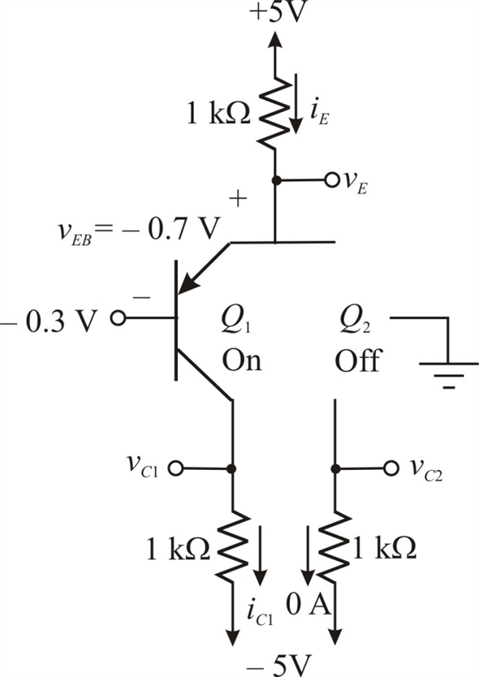

Apply Kirchhoff’s voltage law to the base-emitter loop.
Substitute ◊0.7 V for .
Thus, the emitter voltage  is .
is .
The collector voltage is  .
.
Refer to Figure E8.9 in the text book for the BJT differential amplifier circuit.
For an ideal pnp transistor, input voltage less than 0 V is sufficient to make the transistor conduct.
For an input voltage of , transistor is ON and is OFF.
Draw the transistor circuit.

Apply Kirchhoff’s voltage law to the base-emitter loop.
Substitute ◊0.7 V for .
Thus, the emitter voltage is .
The collector voltage is .
Write the formula for the current through the emitter resistance using Ohm’s law.
Substitute 0.4 V for .
Determine the collector current.
Determine the collector voltage  by applying Ohm’s law.
by applying Ohm’s law.
Substitute for .
The collector voltage of  is
is .
.